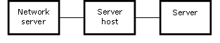

This is a sample implementation of an OBEX Server using the Brecham.OBEX library. It includes the source for both the concrete implementation of both a PUT / Inbox Server and a GET / Folder Browsing server, as well as the implementation of base OBEX Server infrastructure. A sample command-line program is also included which writes the files it receives to disk, and can handle GET of files and Folder Listings, and can listen on Bluetooth, IrDA, or TCP/IP. A similar NETCF WinForms program is also included.
Things may change later on, but for now at least the code isn't a simple ‘create a new instance of this class, and it will do the job just like that’. With server side code I feel that there will always be some different behaviour wanted, for instance to write the received files to a MemoryStream instead of to disk, or to also support GET and SETPATH, or to listen or more protocol at once, or to support multi connections simultaneously, etc. To provide only a closed binary implementation would likely not be the most useful delivery.
So I intend not to release an official complete version as such but instead let the community improve it as it sees fit. So the code here is provided to be added into your project, with some integration work likely needed. Of course I welcome any changes to the code, let me have you diffs and I’ll integrate them for later version. It could even become a CodePlex project if there was demand and support for that.
In brief the main changes in this version is support for running on 32feet.NET's new Widcomm support.
The code is of course copyright me, but is free for any use. All I ask is for a note in your product stating that it uses Brecham Obex, this should be in the About Box or equivalent and/or in a readme-type document.
The sample server can listen on IrDA, and TCP/IP, and Bluetooth (thanks Alan). It currently supports two modes, supports either one or multiple concurrent connection, and will also kill any session if it has been idle for three minutes. Since r6 there is support for running on 32feet.NET's new Widcomm support. Widcomm includes built-in OPP and FTP services, they will need to be stopped before this server is used.
All the reading and writing of the PDUs from and to the client is done with (Network-)Stream’s
asynchronous methods, that is using BeginRead/BeginWrite etc. So no dedicated thread
is required. (Since r2 a synchronous server host is also implemented, and r6 includes
a asynchronous-Sockets server host implementation).
The application calls Start which starts the read for
the first PDU and then returns, the server then runs in the background on a thread
pool thread whenever there's work to be done (note that writes to the peer and to the PUT storage
stream are done synchronously, as it is presumed to be relatively fast, so not needing
asynchronous handling). The server signals that the session has completed by setting
an event.
The code includes a set of unit-tests, covering the various sequences of PDUs in the PUT and GET operations, various errors on the content stream etc, and very simple folder listings, a number of areas need test coverage. Those items and more are listed below.
Just a brief description here, see below for more details on the code structure.
 For most flexibility the code is structured into the three server components as show in the diagram:
The server implements the following interface.
// Summary: // Handles the OBEX protocol: it handles the PDUs read by // ObexServer.IObexServerHost and for each returns a PDU for // it to send or an error. public interface IObexServer { // Summary: // When overriden in a descendant class, accepts a PDU just received, // handles it as it sees fit, and returns a PDU to be sent in response. ObexCreatedPdu HandlePdu(ObexParsedRequestPdu requestPdu); // Summary: // Get or set the container ObexServer.ObexServerHost. // It is set by ObexServerHost.AddHandler(ObexServer.IObexServer). ObexServerHost Host { get; set; } }
The main feature in this release is support for running on 32feet.NET's new Widcomm support, more generally that is support for platforms where BluetoothClient/Listener do not support Sockets. Since there is no common superclass/interface for the network client classes (BluetoothClient, TcpClient,etc) we were passing Socket instances, but we now have implemented wrapper classes SocketListener and SocketClient. Widcomm includes built-in OPP and FTP services, they will need to be stopped before this server is used.
There were two other minor features. Firstly the addition of a new property ‘RemoteEndPoint’ on ObexServerHost; as requested in the forum. Secondly I implemented support for the new Async Sockets support in FX 3.5. It is not configured for use by default nor is it unit-tested. Finally I provide a WinForms application to run the server on Win32, it is based on the NETCF ForCf application..
Two features were added in this release. Firstly handling of multiple connections, secondly Authentication.
On the first we start a new host for each incoming connection, this works with the AsyncComms host only. We store the active servers in a list and thus can kill them when required etc. It also required some changes:
The authentication supports authenticating the client, but will ignore any authentication requests from the client. All code is by default disabled within #if LOCAL_AUTHENTICATION blocks.
Some changes have been made to the logging. Some simple profiling of many multiple connection showing a fair amount of time being spent in the trace serializing lock, so we've set the default level in Debug builds to Information rather than Verbose — and still all off by default in Release builds; also changed the levels of some writeline etc. For best performance use the Release build!
In testing, we've added testing of the Folder-Listing XML creation code. That uses some custom mocking code to create the fake FileInfo/DirectoryInfo objects. We also verify every folder-listing we send in Debug build. We also testing of the expected OBEX PDUs in some test cases.
We have updated to referencing and including Brecham.Obex 1.7.
The main changes in this release in the implementation of the GET operation, and the full OBEX Folder Browsing service including GET of arbitrary files, Folder Listings, and SETPATH. As can be seen in the NetworkServer class in CmdlineRunner there are two events raised by the ObexGetServer: CreateGetStream and FolderChange.
Other changes were minor including changes to the ForCf to display the host logging on screen and use Smartphone-compatible controls (protocol combobox rather that radio buttons). Also work was carried out towards getting clean server stop (which wasn't important in CmdlineRunner app), which included cleaning up BluetoothListener’'s SDP record on server stop.
Other fixes included ensure a clean creation of the PUT destination file rather than just opening it for write, and also catching all exception on file open, for instance if the supplied filename includes bad characters. Also changes to socket creation because NETCF’s TCPListener finalizes the socket!!
Firstly on performance I did some testing to check whether the maximum packet size accepted by the server was important for PUT performance. The resulting chart show clearly that it does. Thus the default maximum MRU (maximum receive unit) size is now set to 16KB.
The second issue fixed post r2 was to set the Bluetooth CoD bits correctly. The service class bit “ObjectTransfer” should be set when an OBEX server is running; when doing an OBEX operation some client devices won't list a discovered peer unless it has that bit set. That was fixed in method CmdlineRunner.NetworkServer.ListenOnBluetooth.
Also the ‘callback’ to request where to write the content from a new PUT request was previously a virtual method that was implemented by creating a subclass and overriding that method, it has now been converted into a standard event — like on a WinForms event or similar.
Other changes in r3 were just code tidying and re-arranging. For instance all the classes have been placed in a file of their own with the filename matching the class name, this is much easier to navigate than the multiple classes per file as previously.
In r2 Alan McFarlane split the class into two, one class now handling the communications (reading and writing PDUs) and the other handling the OBEX protocol PDUs. This allows the two to be changed independently and to allow implementations of each to be swapped easily. He also created a new implementation of the communications class using the normal synchronous NetworkStream Read and Write methods rather than the asynchronous BeginRead/EndRead etc versions used originally. This was in response to the issue raised on the forums about the relative slowness of the server compared with the built-in OBEX Server in Windows CE. Performance was not improved by this change in operation, so any slowness is elsewhere. As Alan notes, some tidying-up is still required.
The other changes, also contributed by Alan in r2, are support for IPv6 including support for Vista's dual-IPv4-IPv6 sockets, so that an instance can accept connections on both IPv4 and IPv6.
The components are implemented in the following locations.
| Project | Class | File | |
| Network server | CmdlineRunner | CmdlineRunner.NetworkServer | NetworkServer.cs |
| Server host | ObexServer | ObexServer.ObexServerHost | ObexServerHost.cs |
| — async comms | ObexServer | ObexServer.AsyncObexServerHost | AsyncComms.cs |
| — sync comms | ObexServer | ObexServer.SyncObexServerHost | SyncComms.cs |
| Server | |||
| — interface | ObexServer | ObexServer.IObexServer | IObexServer.cs |
| — base class | ObexServer | ObexServer.ObexServerBase | ObexServerBase.cs |
| — Inbox server | ObexServer | ObexServer.ObexInboxServer | ObexInboxServer.cs |
| — Folder Browsing server | ObexServer | ObexServer.ObexGetServer | ObexGetServer.cs |
Creating you own code based on these samples should hopefully not be too difficult…
The code in NetworkServer is called from the command-line or Windows
Forms application, which passes the network protocol to listen on. It creates the
network server socket, and each time a new connection arrives a new instance of
the OBEX server class is created, i.e. in its ListenAndHandleForever method:
private void ListenAndHandleForever(Socket serverSock) { System.Threading.Thread thrd = new System.Threading.Thread(Killer); thrd.Start(); // Console.WriteLine(DateTime.Now.ToShortTimeString() + ", server started, listening on: " + EndPointToString(serverSock.LocalEndPoint)); while (true) { Console.WriteLine("Waiting for connection..."); Socket peerSock = serverSock.Accept(); DateTime start = DateTime.UtcNow; Console.WriteLine(DateTime.Now.ToShortTimeString() + ", new connection from: " + EndPointToString(peerSock.RemoteEndPoint)); NetworkStream peer = new NetworkStream(peerSock, true); m_hackPeerStream = peer; //HACK m_hackPeerStream for server 'Killer' hack. // CreatePutStream is now a Event on ObexInboxServer so we don't // have to subclass ObexInboxServer to SavePutToCurrentDirectoryObexServer. // Instead the contents of that class are now method SavePutToCurrentDirectory, // which we set on the event. ObexInboxServer handler = new ObexInboxServer(); handler.CreatePutStream += SavePutToCurrentDirectory; //Or- += WritePutToNull; m_host = CreateHost(peer, handler); m_host.Start(); // Go! m_host.ExitWaitHandle.WaitOne(); // Block until the server completes. Console.WriteLine("Connection lasted {0}", DateTime.UtcNow - start); Console.WriteLine(DateTime.Now.ToShortTimeString() + ", server instance exited due to: " + m_host.ExitReason); //?m_host.RethrowAnyError();//HACK NEW BAD???? } }
Actually in the current code the above method is split across two methods: ListenAndHandleForever, and RunSingleConnectionBlocking. That’s because the current version also supports multiple concurrent connections when configured to do so (see the configuration variable at the top of class NetworkServer). Multi-connection support is in methods: ListenAndHandleForever, RunNewMultiConnectionNonBlocking, and MultiServerHostExited. Whenever a new connection is received a new host is created, added to the 'active' list, and started running in the background (it thus doesn’t work with the SyncHost implementation). The server host now has an Exit event and its own Kill method. The network server adds a Exit event handler to remove the instance from the 'active' list, and the Kill method is used at shutdown and idle server clean-up.
The network server includes two event handler methods to handle the 'create PUT stream' event, one is used to write the content to content to disk using the Name header for the filename, and the second can be used to just discard the content. It also has event handlers for the 'create GET stream' and folder-change events.
For usage in a Forms application see the Compact Framework section below.
Sorry to the VB guys, hope the C# code is not too difficult to follow.
Class ObexServerHost, as above, implements the container for the
server instance. It doesn't implement the comms functionality itself but it is implemented in
a subclass, two of which are provided: AsyncObexServerHost and
SyncObexServerHost. NetworkServer creates an
instance of one of those classes. When started they run reading PDUs passing
them to the server instance and sending back the response PDUs. At this level and exceptions
from the server implementation are caught and dealt with.
The server is implemented by hierarchy IObexServer ←
ObexServerBase ← ObexInboxServer and ObexGetServer. The first
is the interface as shown above, in effect specifying simply that request
PDUs are passed to it and it returns a response PDU.
ObexServerBase provides a simple implementation of the hosting arrangement.
ObexInboxServer provides two features. Firstly it splits the PDUs by opcode and passes each to a corresponding virtual method, there is one virtual method for each opcode type: Connect, Disconnect, Put, Get, SetPath, Session, and Abort. Where a method is not used locally the virtual method simply returns a NotImplemented PDU.
Secondly it supplies handling of the PDUs required for a simple default/Inbox server.
It handles Connect, Disconnect, Put, and Abort. The Connect handler sends
back a success response after reading the maximum packet size value from the incoming
PDU etc, and the Abort method will cancel any current Put operation. The Put
handler knows how to deal with the various sequences of
PDUs that make up a PUT operation. It requires only that the application provides an event handler that knows where to store the received content (event handler
CreatePutStream, or by
overriding method OnCreatePutStream).
Similarly the ObexGetServer class supports the GET and SETPATH operations, and generating Folder-Listing XML. Similar to the PUT case, it requires that the host supplies event handlers, one which creates the source Stream for the GET content, including noting if it is requesting a folder-listing, and the second for the folder-change event.
I’ve done a little testing on the NETCF, having created a simple Window Forms
application (ForCf) that does the work done on the desktop by the CmdlineRunner
application. It seems to work OK in the emulator when I have it listen on TCP/IP
and connect to it from one of the main library’s samples. Getting it to compile
required commenting out all the server’s tracing code, so it’s rather
harder to monitor/debug etc…
This project ultimately calls the ListenAndHandle method as shown above;
which in the ‘sync’ host at least never returns. So instead it is called from a new thread. As
the comment in the buttonGo_Click method notes there is a much better
solution, after the implementation of to-do number 9, the starting code shouldn't
block on ExitWaitHandle, but should instead use the ‘session
exited’ callback (or number 10, and on PUT completion).
In total there are three third-party library dependencies: on Brecham.Obex.dll (which is included), on the NUnit test framework, and finally on 32feet.NET. Depending on which of those are present some of the projects may not build. The main assembly will always build however.
In detail, the main assembly “ObexServer” depends only on Brecham.Obex.dll which is included. The tests assembly “ObexServer.Test” also has a dependency on the NUnit framework assembly and won’t build if it is not present. The desktop runner application “CmdlineRunner” has a dependency on InTheHand.Net.Personal.dll and won’t build without it. Finally the NETCF application “ForCf” has dependencies on the NETCF versions of both Brecham.Obex.dll and on InTheHand.Net.Personal.dll, and on the NETCF build environment as supplied by VS2005 etc.
Note: the project needs the Brecham.Obex. The assemblies for the two platforms are included in the download for ease of use. The test project also depends on a set of streams I’ve previously created for test scenarios, the binary is included.